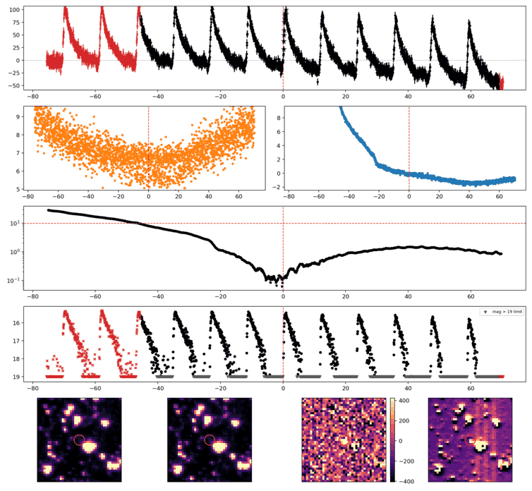
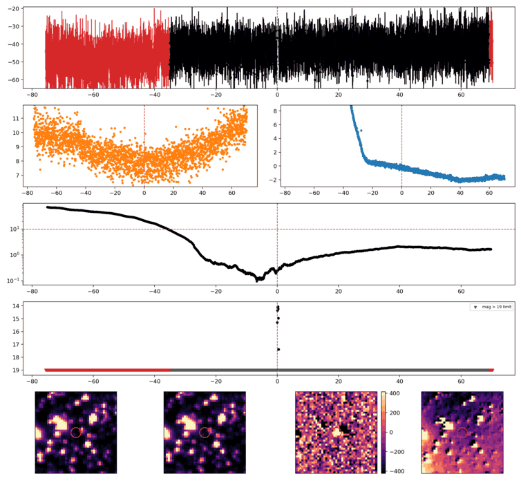
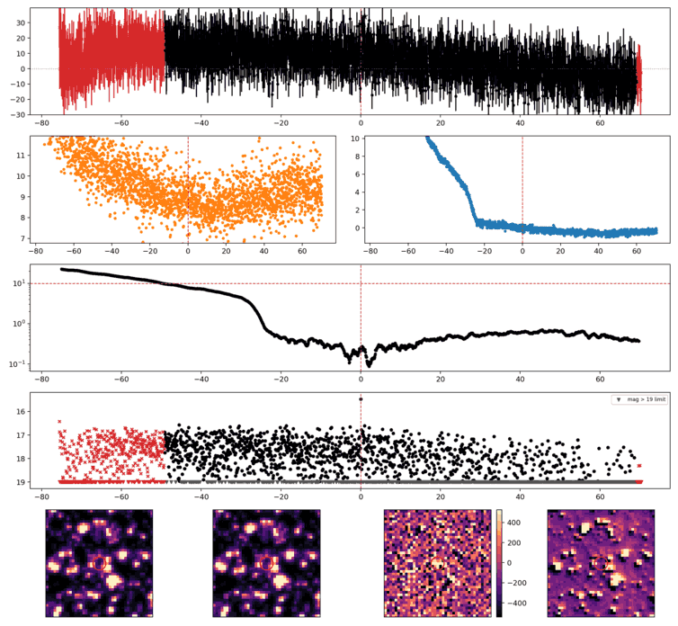
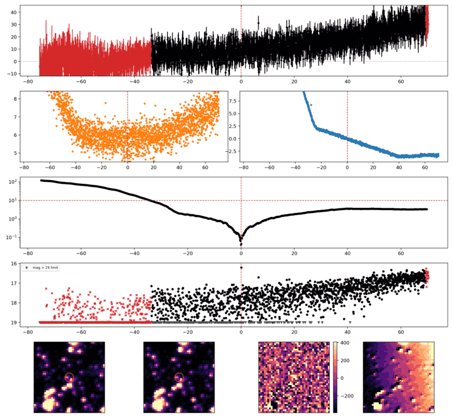
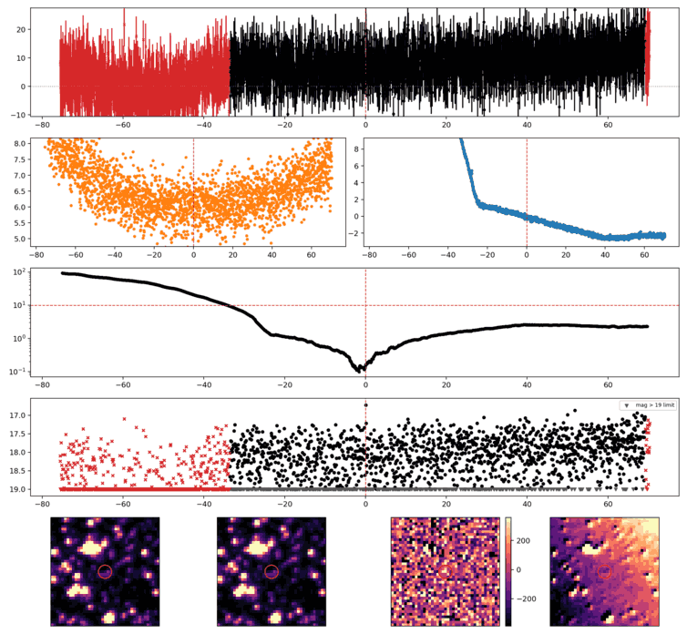
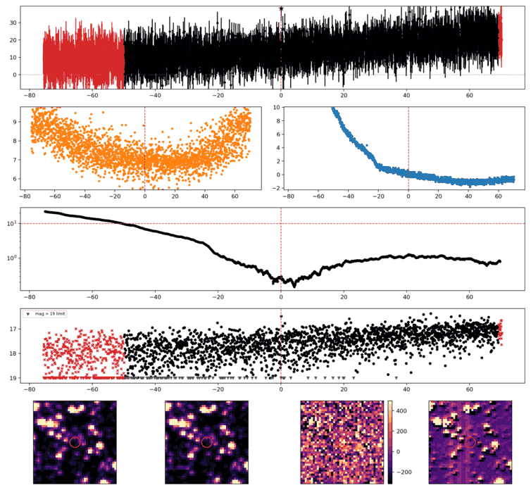
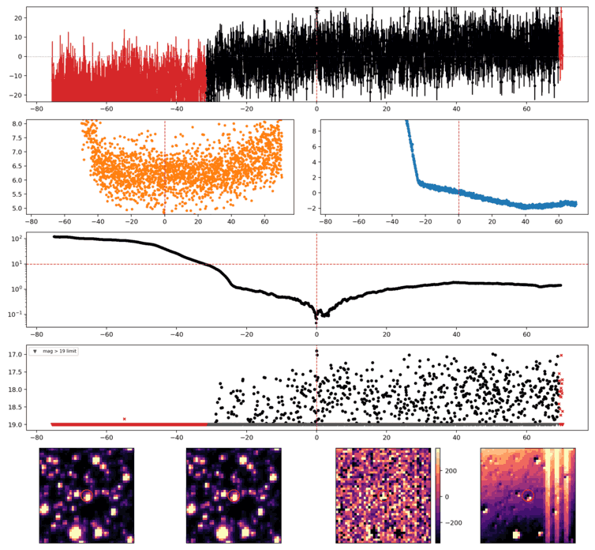

Search centered on refined position (320.5586159, +67.9897928 deg). Gaia coordinates are at J2016.0; proper motions are shown, without epoch propagation. A positional match does not change the candidate flags.
| Source ID / catalog entry | Separation (arcsec) | RA (deg) | Dec (deg) | G (mag) | BP (mag) | RP (mag) | Parallax ± error (mas) | PM RA* ± error (mas/yr) | PM Dec ± error (mas/yr) | RUWE | Variability |
|---|---|---|---|---|---|---|---|---|---|---|---|
| 2222296622475126272 | 1.630 | 320.5582534 | 67.9893610 | 16.094 | 16.618 | 15.287 | 0.113 ± 0.031 | -0.766 ± 0.038 | -1.322 ± 0.036 | 0.977 | VARIABLE |
Retrieved 2026-10-22T18:23:40.231914+00:00
Representative chosen by category, detection count, then Gaussian S/N. Original measurements and classifications are retained below.

Search centered on refined position (295.9962761, +59.1428263 deg). Gaia coordinates are at J2016.0; proper motions are shown, without epoch propagation. A positional match does not change the candidate flags.
No Gaia DR3 sources found within 5 arcseconds.
Retrieved 2026-10-22T18:23:41.063843+00:00

Search centered on refined position (29.3282654, +63.8689067 deg). Gaia coordinates are at J2016.0; proper motions are shown, without epoch propagation. A positional match does not change the candidate flags.
| Source ID / catalog entry | Separation (arcsec) | RA (deg) | Dec (deg) | G (mag) | BP (mag) | RP (mag) | Parallax ± error (mas) | PM RA* ± error (mas/yr) | PM Dec ± error (mas/yr) | RUWE | Variability |
|---|---|---|---|---|---|---|---|---|---|---|---|
| 517937734087923840 | 0.665 | 29.3281559 | 63.8687282 | 18.878 | 19.652 | 18.002 | -0.069 ± 0.175 | -0.391 ± 0.154 | 0.369 ± 0.146 | 0.989 | NOT_AVAILABLE |
Retrieved 2026-10-22T18:23:41.858429+00:00

Search centered on refined position (287.6167856, +58.3371235 deg). Gaia coordinates are at J2016.0; proper motions are shown, without epoch propagation. A positional match does not change the candidate flags.
No Gaia DR3 sources found within 5 arcseconds.
Retrieved 2026-10-22T18:23:42.645602+00:00

Search centered on refined position (290.6226160, +59.1776017 deg). Gaia coordinates are at J2016.0; proper motions are shown, without epoch propagation. A positional match does not change the candidate flags.
No Gaia DR3 sources found within 5 arcseconds.
Retrieved 2026-10-22T18:23:43.614488+00:00

Search centered on refined position (313.2578512, +62.9873953 deg). Gaia coordinates are at J2016.0; proper motions are shown, without epoch propagation. A positional match does not change the candidate flags.
No Gaia DR3 sources found within 5 arcseconds.
Retrieved 2026-10-22T18:23:44.533976+00:00

Search centered on refined position (291.2230190, +67.7586955 deg). Gaia coordinates are at J2016.0; proper motions are shown, without epoch propagation. A positional match does not change the candidate flags.
No Gaia DR3 sources found within 5 arcseconds.
Retrieved 2026-10-22T18:23:45.325870+00:00